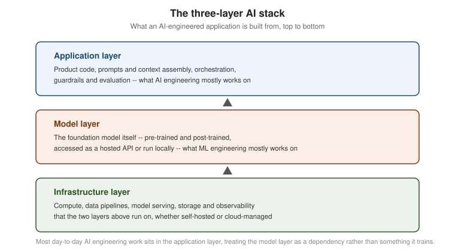

What Is an LLM?
|
This content was generated with the assistance of AI and should be verified against the official documentation before being relied on in production. |
Examples on this page target Python 3.12 with transformers 5.17, plus the Anthropic Python SDK against the
hosted claude-sonnet-5 model and Ollama 0.34 running llama3.1:8b locally, all verified as current as of
2026-09-28. Nothing here trains a model; it explains what the thing being called into these SDKs actually is.
From language model to LLM to foundation model
A language model is, at its narrowest, anything that assigns a probability to a sequence of words, or predicts the next word given the ones before it — a task older than deep learning, going back to n-gram statistics computed directly from text counts. A large language model (LLM) is the same idea scaled up enormously: a neural network, almost always a transformer (covered in depth on Transformer Architecture), with billions of parameters, trained on a large fraction of the public text (and increasingly code, images and other modalities) available to its creator.
Foundation model is a broader term still, popularised by the Stanford Institute for Human-Centered AI: a model trained on broad data at scale that can be adapted to a wide range of downstream tasks, rather than trained for one task from scratch. Every current LLM is a foundation model, but the term also covers non-text foundation models (image, audio, video, multimodal), and it emphasises the general-purpose, adaptable nature of the model rather than its size or the fact that it processes language. In practice, on this site and elsewhere, "LLM" and "foundation model" are used close to interchangeably when the model in question is a large, general-purpose, text-capable one — which is what every model discussed in this section is.
Self-supervised pre-training
Training an LLM from a large text corpus would ordinarily require labelling every example by hand, which does not scale to the size of the internet. Self-supervised pre-training sidesteps this: the training signal is derived automatically from the raw text itself, with no human labels at all. The most common self-supervised objective for an LLM is exactly the one in the next section — given a chunk of real text, hide the next word and have the model predict it, then compare the prediction against the word that was actually there. Every sentence a model was ever trained on supplies its own "correct answer" this way, which is what makes it possible to pre-train on a corpus of trillions of tokens rather than a hand-labelled dataset orders of magnitude smaller.
Pre-training alone produces a model that is fluent and broadly knowledgeable but not yet an assistant — that further step is post-training, covered on How LLMs Are Trained, and is what turns a base model into the instruction-tuned or reasoning model most people actually interact with (below).
Next-token prediction: the core loop
Whatever an LLM is eventually used for — answering a question, writing code, summarising a document — the mechanism underneath is always the same loop: given the tokens so far, produce a probability distribution over every possible next token, pick one, append it to the sequence, and repeat. (What a "token" actually is — a whole word, a sub-word piece, or a byte — is covered on Tokens & Tokenization; this page treats a token as an opaque unit of text.) There is no separate "answer the question" mode and "write code" mode inside the model: every output, regardless of task, is produced one token at a time by this same next-token loop, with the model’s behaviour shaped entirely by what has come before in the sequence (the prompt, plus whatever it has generated so far) and by how it was trained.
The following snippet uses Hugging Face transformers’ `pipeline abstraction, the simplest way to run this
loop end to end, against the small openai-community/gpt2 model so it runs on a laptop CPU:
from transformers import pipeline
generator = pipeline(task="text-generation", model="openai-community/gpt2")
output = generator("The next-token prediction loop works by", max_new_tokens=20, num_return_sequences=1)
print(output[0]["generated_text"])See the official transformers pipeline tutorial.
pipeline hides the loop itself behind a single call. The next snippet unrolls it manually: at each step, a
forward pass through the model produces logits (one raw score per vocabulary entry) for the next token; taking
the argmax of the final position’s logits picks the single most likely next token (greedy decoding — the
alternative sampling strategies that trade determinism for variety are covered on
Sampling & Decoding), which is then appended to the input and fed back in for
the next step:
import torch
from transformers import AutoModelForCausalLM, AutoTokenizer
tokenizer = AutoTokenizer.from_pretrained("openai-community/gpt2")
model = AutoModelForCausalLM.from_pretrained("openai-community/gpt2")
input_ids = tokenizer("The next-token prediction loop works by", return_tensors="pt").input_ids
for _ in range(20):
with torch.no_grad():
logits = model(input_ids).logits # shape: (batch, seq_len, vocab_size)
next_token_logits = logits[:, -1, :] # logits for the position right after the input
next_token_id = next_token_logits.argmax(dim=-1, keepdim=True) # greedy: most likely token
input_ids = torch.cat([input_ids, next_token_id], dim=-1) # feed it back in for the next step
print(tokenizer.decode(input_ids[0]))generate() (used internally by pipeline) does the same loop with far more options — sampling strategies,
beam search, stopping criteria — but the argmax-over-logits step above is what it is doing underneath by
default. See the official
transformers LLM generation tutorial and the
GenerationMixin.generate() API
reference.
Base, instruction-tuned and reasoning models
Pre-training on raw text, by itself, produces a base model: something that continues whatever text it is given in a statistically plausible way, but that was never taught to behave like an assistant. Asked "What is the capital of France?", a base model is just as likely to continue with a list of similar trivia questions as it is to answer the one it was asked, because "continue this text plausibly" is the only objective it was ever trained on.
Instruction-tuned models add a post-training stage (supervised fine-tuning on instruction/response pairs,
usually followed by preference tuning — both covered in depth on
How LLMs Are Trained) that steers the model toward following an instruction and
producing a helpful, on-task response instead of merely continuing the text statistically. Every model reachable
through a hosted chat API or assistant product today — including claude-sonnet-5 and llama3.1:8b, both used
below — is instruction-tuned; bare base models are mostly encountered in research or as a starting point for
further fine-tuning.
Reasoning models add a further layer on top of instruction tuning: additional reinforcement-learning-based training that rewards working through a problem step by step before answering, and often an inference-time mechanism (a "thinking" or extended-reasoning phase) that runs before the final response. This trades latency and cost for better performance on tasks that benefit from multi-step deliberation — math, planning, debugging. Reasoning Models covers this family, its effort/budget controls, and how prompting one differs from prompting a purely instruction-tuned model.
The three-layer AI stack
Building a product on top of an LLM cleanly separates into three layers, a framing widely used to describe where AI engineering effort actually goes:

-
Application layer — the product code that assembles prompts and context, calls the model, parses and validates its output, applies guardrails, and evaluates quality. This is where most of the work in an LLM-powered product actually lives, and it is the layer this whole AI section is mostly about.
-
Model layer — the foundation model itself: whichever base, instruction-tuned or reasoning model is doing the actual next-token prediction, whether reached through a hosted API (Anthropic, OpenAI) or run locally (Ollama, and the models covered in the Hugging Face & On-Device Models sub-section).
-
Infrastructure layer — the compute, data pipelines, model serving, storage and observability that the two layers above depend on, whether that infrastructure is self-hosted or provided by a cloud vendor.
AI engineering vs. ML engineering
ML engineering is the discipline of building and training models from data: collecting and labelling datasets, choosing an architecture, running training jobs, and evaluating against held-out data — work squarely in the model layer above. AI engineering is a newer, distinct discipline that treats a foundation model as an external dependency rather than something it trains from scratch: it works almost entirely in the application layer, building products on top of models that already exist, and its core activities are model selection (Choosing a Model covers this), prompt and context engineering, evaluation, and orchestrating retrieval, tools and agents around the model.
The practical consequence is that an AI engineer rarely needs a GPU cluster or a labelled training set to be productive: the fastest path to a working product is usually to reach for an existing instruction-tuned or reasoning model through an API, and spend the engineering effort on the application layer around it instead of on the model itself.
What LLMs are good and bad at
| Good at | Bad at |
|---|---|
Fluent, well-formed text in the language(s) it was trained on |
Guaranteed factual accuracy, especially for long-tail or obscure facts (hallucination) |
Following a well-specified instruction and adapting its output format on request |
Reliable exact arithmetic, counting, and other precise symbolic operations without external tools |
Summarising, extracting structured fields from, and classifying a given piece of text |
Knowing about anything after its training cutoff, or events specific to a private, unseen document |
Learning a task from a handful of examples in the prompt (in-context learning), with no retraining |
Being fully deterministic and reproducible, even at a temperature of zero (see Sampling & Decoding) |
Writing and explaining code in widely used languages, given enough context |
Verifying its own output is correct, or reliably knowing when it does not know something |
Holding and using a large amount of context supplied in a single prompt |
Remembering anything between independent API calls, without an application layer adding memory itself |
Hallucinations & Limitations goes into the right-hand column in depth, including why models hallucinate and how to mitigate it; nothing on this page should be read as a complete account of an LLM’s failure modes.
Comparing a hosted model and a local model on the same prompt
The rest of this sub-section, and several sibling AI sub-sections, run the same recurring scenario,
DocsAssistant — an assistant that answers questions about this site’s own AsciiDoc pages, using Ollama
nomic-embed-text for embeddings and Ollama llama3.1:8b for chat, as introduced on
the Vector Databases & RAG landing page. The snippets below send the exact
same DocsAssistant-style question to two different instruction-tuned models: a hosted one through the Anthropic
SDK, and a local one through Ollama’s HTTP API, to make concrete that "an LLM" can mean either, behind the same
prompt-in, text-out shape.
Hosted, via the Anthropic Python SDK (reading the API key from the environment, never hard-coded):
import os
from anthropic import Anthropic
client = Anthropic(api_key=os.environ["ANTHROPIC_API_KEY"])
message = client.messages.create(
model="claude-sonnet-5",
max_tokens=200,
messages=[{"role": "user", "content": "In one sentence, what is HNSW used for in vector search?"}],
)
print(message.content[0].text)See the official Anthropic Messages API reference and the Claude models overview page.
Local, against Ollama’s own /api/generate endpoint with curl (no API key at all — Ollama does not require
one for a local, unauthenticated install):
curl http://localhost:11434/api/generate -d '{
"model": "llama3.1:8b",
"prompt": "In one sentence, what is HNSW used for in vector search?",
"stream": false
}'See the official Ollama API reference (its
/api/generate page) for /api/generate and its stream/options fields.
Both calls are, mechanically, the same next-token loop described earlier in this page; what differs is where the model layer runs (Anthropic’s infrastructure versus a local Ollama process) and which model answers. Model Landscape covers how to choose between options like these for a given task.